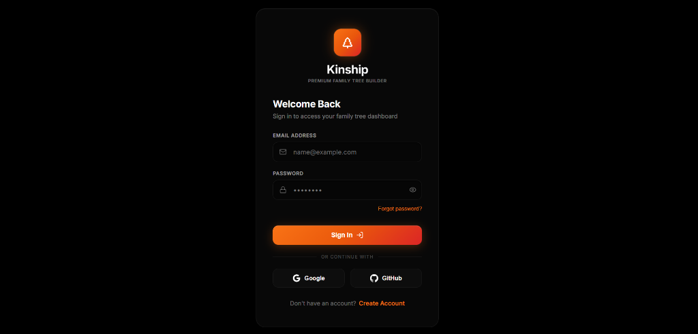

Kinship Family Tree
Kinship is a full-stack family tree mapping platform featuring an infinite panning and zooming vector canvas. It is designed to visualize complex lineage nodes clearly without overlapping, tracking member relationships, spouses, and descendants persistently.

What it is
The family tree visualizer operates on an interactive canvas, allowing users to build large relational family networks. Instead of standard rigid tree lists, it features an infinite panning whiteboard workspace where marriage connectors and sibling rows auto-space dynamically as the tree expands.

How it is built
Built with React (Vite) and React Flow for rendering vector nodes on a fluid canvas. Custom coordinate algorithms center spouse junctions dynamically and align sibling rows automatically. Relational database storage is handled by Supabase, utilizing Supabase Auth to protect private family charts.
const getMarriageJunction = (fatherPos, motherPos) => {
const middleX = (fatherPos.x + motherPos.x) / 2;
const middleY = (fatherPos.y + motherPos.y) / 2;
return { x: middleX, y: middleY + 40 };
};Core Features
- 🌳 Zoomable/pannable infinite React Flow workspace mapping family hierarchies.
- 💍 Automatically centered marital connection nodes.
- 📄 Export options to download family trees to PDF or PNG image layouts.
- 💾 Relational persistence keeping tree member positions saved in database tables.